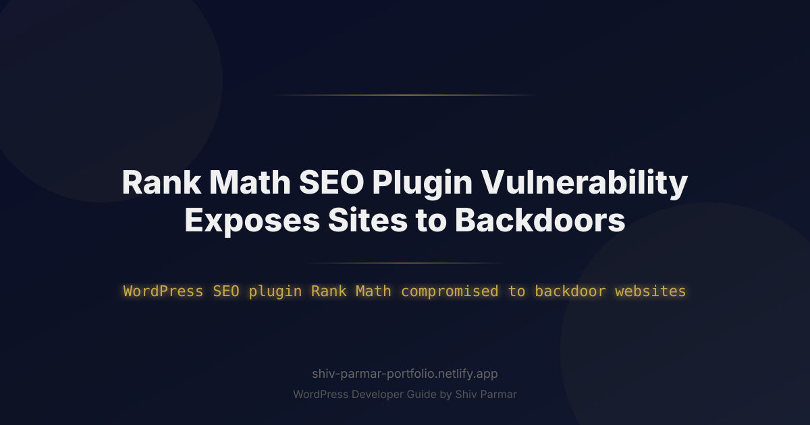

Rank Math SEO Plugin Vulnerability Exposes Sites to | Shiv Parmar
Table of Contents
Security vulnerabilities in core web applications represent an existential risk to digital infrastructure, but few attack vectors are as devastating as an exploit within a high-privilege SEO suite. In recent attack campaigns, threat analysts observed incidents where the WordPress SEO plugin Rank Math compromised to backdoor websites, leaving webmasters, enterprise agencies, and e-commerce stores scrambling to secure their compromised perimeters. Because search engine optimization plugins necessarily interact with core site controls—modifying metadata, executing redirects, injecting tracking scripts, and interfacing directly with REST API endpoints—a compromise within this layer provides attackers with virtually unlimited lateral movement across the hosting environment.
When threat actors weaponize vulnerabilities within the WordPress plugin Rank Math ecosystem, they rarely stop at simple defacements. Instead, automated botnets rapidly exploit the underlying flaw to establish persistent backdoors, install web shells, drop rogue administrator accounts, and hijack search rankings via stealth cloaking techniques. For website owners, the impact goes far beyond immediate downtime; it encompasses domain blacklisting by Google, severe customer data liabilities, and the long-term erosion of organic search visibility.
Understanding the architecture of this vulnerability, how remote code execution and privilege escalation occur, and how to thoroughly sanitize an infected server is vital for any web professional. This deep dive dissects the technical mechanics of the exploit, provides actionable forensics strategies, and walks you through systematic remediation to guarantee your WordPress installation is permanently secured against re-infection.
What is the Rank Math SEO Plugin Vulnerability?
The security vulnerability associated with the Rank Math SEO plugin stems from improper capability checks and flawed input sanitization within its registered REST API routes. Rank Math relies heavily on WordPress REST API endpoints to facilitate seamless client-side administration, automated schema generation, and redirects management. When an endpoint fails to verify user permissions using robust capability checks—such as current_user_can('manage_options')—unauthenticated or low-privileged remote attackers can send crafted HTTP POST requests directly to internal plugin controllers.
In standard execution paths, updating critical site configuration options through the WordPress database is strictly reserved for administrators. However, when an exposed REST API route permits arbitrary parameter injection, attackers can manipulate the core wp_options table. By overwriting key options such as users_can_register and default_role, a remote threat actor can instantly open public registration and set the baseline role for new users to "administrator".
Once elevated credentials are generated, attackers transition from basic parameter tampering to full-scale persistence. Exploitation chains systematically execute the following routine:
| Stage | Attack Mechanism | Payload / Execution Objective |
|---|---|---|
| Phase 1: Reconnaissance | Automated REST API Scanning | Probe /wp-json/rankmath/v1/ endpoints to confirm version vulnerabilities and missing nonce tokens. |
| Phase 2: Privilege Escalation | Option Injection / Capability Bypass | Set users_can_register=1 and default_role=administrator via unauthorized API parameters. |
| Phase 3: Payload Delivery | Plugin / Theme Uploader Abuse | Upload an obfuscated zip archive containing an evasion-capable PHP web shell (e.g., WSO, FilesMan, or b374k). |
| Phase 4: Persistence Deployment | Mu-Plugins and Cron Tampering | Drop persistent scripts in wp-content/mu-plugins/ and register stealth crons in the database. |
| Phase 5: Monetization | SEO Cloaking & Traffic Redirection | Inject conditional redirects targeting organic search referrals to malicious pharmaceutical or gambling gateways. |
The true danger of this vulnerability lies in its stealth. While traditional brute-force attacks generate substantial noise in web server access logs, an unauthenticated REST API exploit requires only a single, well-formed request to establish an administrative foothold. Once the rogue administrator is inside, the site is effectively owned from the underlying file system down to the database layers.
Why WordPress Plugin Security Matters in 2026
As the web ecosystem matures, the perimeter around standard content management systems has evolved significantly. In 2026, attacks against CMS platforms are rarely orchestrated manually by opportunistic script kiddies. Today, webmasters contend with autonomous cybercrime syndicates utilizing AI-driven vulnerability scanners and distributed proxy botnets that detect zero-day and n-day vulnerabilities within minutes of public disclosure.
SEO plugins represent an exceptionally lucrative target for modern threat campaigns. Because plugins like Rank Math require broad write permissions across database tables—such as wp_posts, wp_postmeta, and wp_options—any flaw that exposes these execution contexts gives attackers immediate access to high-value infrastructure. Compromising an SEO plugin provides direct access to:
- Search Engine Results Page (SERP) Manipulation: Attackers can dynamically modify OpenGraph tags, canonical URLs, and schema markup to perform conditional cloaking, serving clean content to Googlebot while redirecting actual human visitors to credential-harvesting landing pages.
- Server-Level Command Execution: A compromised plugin within an environment running PHP without strict process isolation can allow arbitrary code execution, enabling lateral movement to other virtual hosts on the same physical server.
- Supply Chain and Automated Ad Injection: By embedding remote JavaScript payloads within the plugin's header and footer script hooks, attackers distribute drive-by downloads to every visitor accessing the frontend application.
Furthermore, cloud hosting environments and headless architectures increasingly blur the lines between presentation layers and backend storage. When high-profile software like the WordPress plugin Rank Math is exploited, the remediation window is razor-thin. Securing this surface requires continuous runtime inspection, rigorous principle-of-least-privilege configuration, and rapid forensics when anomalies arise.
Step-by-Step Guide: Identifying, Mitigating, and Remediating the Backdoor Threat
If you suspect or confirm that the WordPress SEO plugin Rank Math compromised to backdoor websites has affected your production environment, rapid and structured incident response is critical. Follow this technical, step-by-step framework to identify the intrusion, eliminate backdoors, and restore system integrity.
Step 1: Immediate Triage and Environment Isolation
The first priority is preventing further data exfiltration, automated lateral movement, and outbound spam dispatch. Do not immediately delete files or drop database tables without capturing forensic evidence.
Take the affected website offline at the server level by placing a static maintenance page in place or denying external traffic via web server configuration. For Nginx, you can temporarily restrict access to your administrative IP address:
# Place within the Nginx server block
location / {
allow 192.0.2.50; # Replace with your trusted static IP
deny all;
try_files $uri $uri/ /index.php?$args;
}
Alternatively, if managing an Apache environment, drop an emergency .htaccess rule at the root of the web directory:
# Emergency Access Restriction
Order Deny,Allow
Deny from all
Allow from 192.0.2.50
Step 2: Inspecting Access Logs for Exploitation Signatures
Pinpoint the exact timestamp and vector of intrusion by querying your HTTP access logs for calls made to the Rank Math REST API endpoints. You can run high-performance command-line searches across uncompressed or gzipped logs using grep or zgrep:
# Search Apache/Nginx access logs for suspicious REST calls
grep -E "wp-json/rankmath/v1" /var/log/nginx/access.log | grep -E "POST|PUT"
# Identify rogue administrator account registrations
grep -E "wp-login\.php\?action=register" /var/log/nginx/access.log
Pay close attention to responses returning HTTP status code 200 OK from unauthorized IP addresses, especially those interacting with updateMeta, updateRedirection, or general settings endpoints.
Step 3: Detecting Hidden Web Shells and File System Modifications
When threat actors gain administrative access via Rank Math, their next objective is establishing persistence independent of the plugin itself. They accomplish this by creating web shells disguised as core WordPress files, drop-in plugins, or media uploads.
Verify core file integrity against the official WordPress API checksums using the WP-CLI utility:
# Verify core WordPress checksums
wp core verify-checksums --allow-root
# Verify all installed plugins
wp plugin verify-checksums --all --allow-root
Any file that flags as modified or unexpected within the core directory structure must be quarantined immediately. Next, search your file system for recent modifications and common obfuscation indicators (such as eval(), base64_decode(), and gzinflate()):
# Find files modified within the last 7 days inside wp-content
find wp-content/ -type f -mtime -7 -name "*.php"
# Search for nested obfuscation patterns in uploads directory
find wp-content/uploads/ -type f -name "*.php" -exec grep -Hn "eval(" {} \;
# Scan for malicious drop-ins in mu-plugins
ls -la wp-content/mu-plugins/
Pay specific attention to the wp-content/mu-plugins/ directory. Must-Use plugins execute automatically on every page load before standard plugins run, making them the preferred persistence location for modern backdoors.
Step 4: Database Sanitization and Rogue Account Purging
Attackers who exploit the Rank Math vulnerability often leave behind rogue administrative users or hook malicious JavaScript into legitimate database records. Inspect the database directly using MySQL or WP-CLI.
List all users possessing administrative capabilities:
# Identify all users with the administrator role
wp user list --role=administrator --allow-root
If you encounter unfamiliar accounts, immediately delete them and reassign any associated posts to a verified, secure account:
# Delete unauthorized administrator (replace ID with malicious user ID)
wp user delete 14 --reassign=1 --allow-root
Next, audit the wp_options table for persistent script injections and reset the compromised registration settings:
# Close public registration and reset default role
wp option update users_can_register 0 --allow-root
wp option update default_role subscriber --allow-root
# Search for malicious script tags within options
wp db query "SELECT option_name FROM wp_options WHERE option_value LIKE '%Review the automated scheduled events (WP-Cron) for rogue jobs that periodically download payloads or re-inject deleted backdoors:
# List all registered cron hooks
wp cron event list --allow-root
Step 5: Updating and Reinstalling Rank Math from Secure Sources
Never rely on a simple in-dashboard update when remediating an actively compromised site. The local filesystem may contain modified plugin files that tamper with the update mechanism itself. Instead, completely remove the existing plugin files and reinstall the latest, patched version directly from the official repository.
# Force delete the compromised Rank Math directory
wp plugin deactivate seo-by-rank-math --uninstall --allow-root
rm -rf wp-content/plugins/seo-by-rank-math/
# Download and install a clean, up-to-date copy
wp plugin install seo-by-rank-math --activate --allow-root
Step 6: Rotating Salts, Keys, and Passwords
Once the backdoor files and rogue database records are eliminated, invalidate all active user sessions and authentication cookies across the entire installation. If an attacker stole session cookies or password hashes, invalidating the security salts terminates their access instantly.
Generate fresh salts and update your wp-config.php file using WP-CLI:
# Automatically regenerate secret keys in wp-config.php
wp config shuffle-salts --allow-root
Finally, force a global password reset for all remaining legitimate administrators and SFTP/SSH accounts linked to the hosting environment.
Best Practices for Securing WordPress and Plugins
Reactive remediation cleans an infection, but proactive defense ensures your systems withstand future zero-day campaigns. Hardening a WordPress site requires a defense-in-depth model that protects application logic, database operations, and server processes simultaneously.
1. Implement Web Application Firewall (WAF) Rules
A properly configured Web Application Firewall blocks malicious payloads before they ever reach PHP execution threads. Cloud-based firewalls (such as Cloudflare Enterprise or AWS WAF) and application-level firewalls (such as Wordfence or ModSecurity) should be configured with custom rules that enforce strict schema validation on all REST API calls.
For Nginx web servers, you can implement rate limiting and block direct PHP execution within vulnerable directories such as /wp-content/uploads/:
# Deny PHP execution in uploads and cache directories
location ~* ^/(?:wp-content/(?:uploads|cache)|wp-includes)/.*\.php$ {
deny all;
return 404;
}
2. Enforce File System Immutability and Strict Permissions
Under optimal security configurations, the web server user (e.g., www-data or nginx) should not possess write access to PHP executable files in production. Utilizing immutable file structures ensures that even if an attacker discovers an arbitrary file upload flaw, the web server cannot write the script to disk.
Set standard, hardened permissions via command line:
# Directories should be 755
find /var/www/html/ -type d -exec chmod 755 {} \;
# Files should be 644
find /var/www/html/ -type f -exec chmod 644 {} \;
# wp-config.php should be strictly locked down
chmod 600 /var/www/html/wp-config.php
3. Restrict and Monitor WordPress REST API Endpoints
While the REST API is essential for internal WordPress operations, public exposure of administrative routes is unnecessary. Utilize endpoint filtering to restrict administrative namespaces to authorized IP addresses or authenticated sessions.
Add this targeted filter to a custom security plugin to block unauthenticated access to Rank Math REST routes:
add_filter('rest_authentication_errors', function($result) {
if (!empty($result)) {
return $result;
}
// Check if the request targets the Rank Math API namespace
$current_route = isset($GLOBALS['wp']->query_vars['rest_route']) ? $GLOBALS['wp']->query_vars['rest_route'] : '';
if (strpos($current_route, '/rankmath/v1') === 0 && !current_user_can('manage_options')) {
return new WP_Error(
'rest_forbidden',
__('Access restricted to authorized administrators.', 'security-textdomain'),
array('status' => 403)
);
}
return $result;
});
4. Deploy Continuous File Integrity Monitoring (FIM)
Automated FIM tools monitor the filesystem for unauthorized file creations, deletions, or modifications in real-time. Tools like OSSEC, Tripwire, or server-level cron jobs comparing directory states against known Git hashes will notify your SecOps team within seconds of an intruder dropping a payload.
Common Mistakes to Avoid During Incident Response
When reacting to news that the WordPress SEO plugin Rank Math compromised to backdoor websites, site operators often execute well-intentioned but flawed incident response steps. These common mistakes frequently result in recurring infections and prolonged downtime.
| Mistake | Why It Fails | Correct Approach |
|---|---|---|
| Deleting only the flagged web shell file | Modern backdoors deploy multiple redundant "droppers" across different folders and database options. | Execute a comprehensive audit of the core, plugins, uploads, database, and cron tables simultaneously. |
| Restoring an unverified backup blindly | Attackers often dwell within an environment for weeks before deployment; restores often re-introduce the vulnerability. | Audit backups prior to restoration, or deploy clean core/plugin files while migrating only validated content. |
Leaving wp-config.php salts intact |
Active sessions and stolen cookies remain valid, allowing attackers back in without needing a password. | Regenerate all authentication keys and salts immediately using wp config shuffle-salts. |
| Relying exclusively on automated scanner plugins | Scanners running inside an infected environment can be hooked and blinded by malicious code. | Perform external server-level command-line scans (e.g., ClamAV, YARA rules, WP-CLI checksum verification). |
| Failing to patch immediately after cleanup | If the vulnerable Rank Math plugin version remains active, automated bots will re-exploit the site within minutes. | Update the plugin immediately or replace it with a clean, validated copy from an official repository. |
Another dangerous mistake is failing to inspect the external communication channels of the server. Attackers who gain access through the WordPress plugin Rank vulnerability often modify outbound network rules or establish persistent reverse shells via cron jobs. If you clean the PHP files but ignore the underlying Linux crontab (e.g., /etc/crontab, /var/spool/cron/crontabs/), the system will simply download a new payload at the next scheduled interval.
# Check system crontabs for malicious reverse shells or curls
crontab -l -u www-data
cat /etc/crontab
ls -la /etc/cron.*
Maintaining security vigilance requires treating every component of your WordPress stack as a potential vector. By conducting thorough root-cause investigations, leveraging command-line utilities for forensic discovery, and enforcing server-level isolation, you effectively neutralize sophisticated backdoor attempts and ensure the long-term resilience of your digital footprint.
Conclusion
The recent security flaw where the WordPress SEO plugin Rank Math compromised to backdoor websites serves as a stark reminder of how vulnerable online assets can be without proactive maintenance. In the fast-moving WordPress ecosystem, staying ahead of potential exploits requires continuous vigilance, prompt patch management, and thorough security audits to ensure unauthorized actors cannot establish persistent access to your infrastructure.
Securing your online presence goes beyond simply keeping a single WordPress plugin Rank Math setup updated; it demands a comprehensive approach to code hygiene, hardening measures, and routine monitoring. Failing to address vulnerabilities quickly can jeopardize your site's search rankings, compromise user data, and destroy brand trust in an instant.
If you need expert help securing, optimizing, or expanding your online presence, Shiv Parmar is available for professional WordPress development work worldwide. From security remediation and custom plugin development to full site builds, Shiv delivers high-quality engineering tailored to keep your platform secure, resilient, and performing at its best.